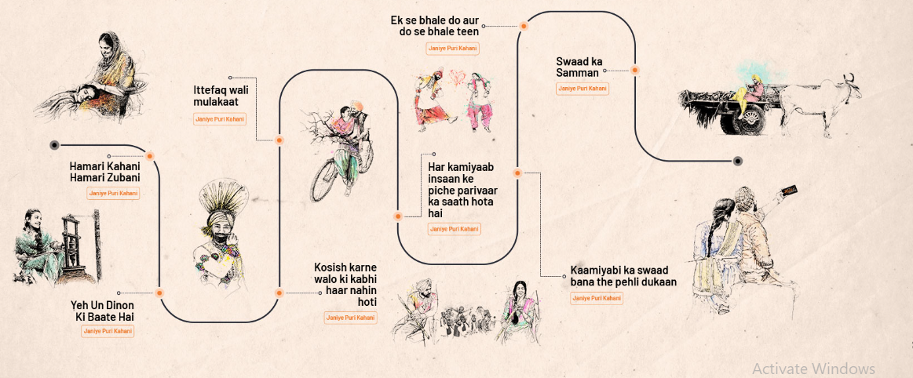

| ABOUT US
Making people happy through food |
AUTHENTIC PUNJABI RECIPE FROM PUNJAB TO GUJARAT SINCE 2003.
Jassi De Parathe has established itself as the authentic Punjabi food restaurant in Ahmedabad. Our commitment to provide home cooked style food made under the supervision of the family has ensured growing food lovers. Started as a pushcart (lari) near Mansi, Satelite in 2003, Jassi De Parathe has seen rapid growth and now serves the delicious food at it’s Vastrapur, Prahlad Nagar, Vadodara, Odhav, Anand and Rajkot branches. More will be added soon so that you are always close to true punjabi food. |
|---|
OUR JOURNEY
